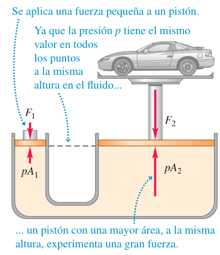
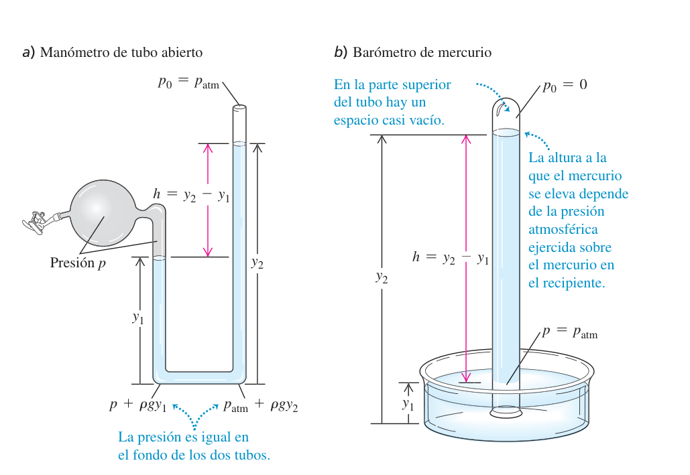
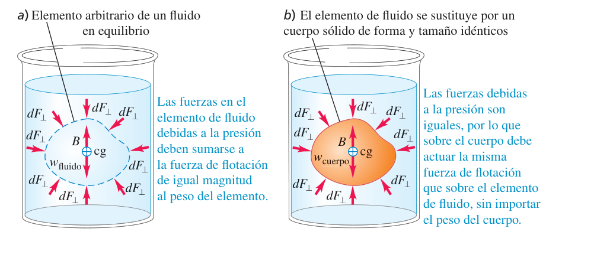
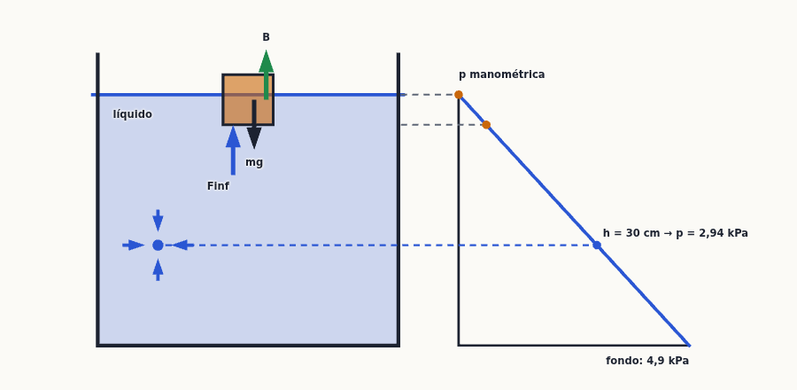

Mecánica de fluidos
Un barco de acero que flota, el agua que sale a chorro de un depósito, un avión que se sostiene en el aire, la sangre que empuja contra las paredes de una arteria: todo son fluidos (líquidos y gases). Este tema tiene dos mitades. Con el fluido en reposo aprenderás qué es la densidad, cómo crece la presión con la profundidad, la ley de Pascal y el principio de Arquímedes. Con el fluido en movimiento, la ecuación de continuidad, la ecuación de Bernoulli (que es, en el fondo, conservación de la energía) y una primera idea de la viscosidad.
El tema en 5 minutos P
Una sola idea: un fluido (líquido o gas) empuja perpendicularmente contra todo lo que toca, y ese empuje por unidad de área es la presión. El tema tiene dos mitades. Fluido quieto: la presión crece con la profundidad porque cada capa sostiene el peso de las que tiene encima ($p=p_0+\rho gh$); de ahí salen la prensa hidráulica (Pascal) y el empuje sobre los cuerpos sumergidos (Arquímedes). Fluido en movimiento: lo que entra por un tubo sale por el otro (continuidad, $A_1v_1=A_2v_2$) y la energía se conserva (Bernoulli, que es el teorema del trabajo y la energía escrito «por unidad de volumen»).
Necesitas: diagramas de cuerpo libre con $\sum F_y=0$ (T4-T5), la conservación de la energía (T6-T7), el tiro horizontal (T3) para saber dónde cae un chorro, y la idea de presión del tema 11 ($p=F_\perp/A$, 1 Pa = 1 N/m²). Si el enunciado no da datos: $g=9{,}8$ m/s², agua 1000 kg/m³, agua de mar 1030 kg/m³, 1 atm $=1{,}013\times10^5$ Pa.
El método en 4 pasos (úsalo siempre, en este orden)
Es la «Estrategia para resolver problemas 12.1» del libro (Bernoulli), ampliada al fluido en reposo. U p.382
Las 6 fórmulas que hay que saber
| Fórmula | Cuándo se usa |
|---|---|
| $\rho=\dfrac mV$, $\ p=\dfrac{F_\perp}{A}$ | «densidad», «¿de qué material es?», «fuerza sobre el fondo, la tapa o el pistón». |
| $p=p_0+\rho gh$ $\ $(manométrica: $\rho gh$) | «a una profundidad», «en el fondo», «¿a qué altura hay que poner el depósito?», tubo en U, manómetro, barómetro. |
| $\dfrac{F_1}{A_1}=\dfrac{F_2}{A_2}$ | «elevador / prensa hidráulica», «dos pistones», «¿qué fuerza hay que aplicar?». |
| $B=\rho_{fluido}V_{sum}g$; flota si $\rho_{cuerpo}\le\rho_{fluido}$ | «sumergido», «flota», «fracción sumergida», «tensión del hilo bajo el agua», «pesa menos en el agua». |
| $A_1v_1=A_2v_2$, $\ Q=Av$ | «tubo que se estrecha», «caudal», «litros por segundo», «volumen descargado en una hora». |
| $p_1+\rho gy_1+\tfrac12\rho v_1^2=p_2+\rho gy_2+\tfrac12\rho v_2^2$ $\ $(Torricelli: $v=\sqrt{2gh}$) | «presión en otro punto de la tubería», «rapidez de salida por un orificio», «Venturi», «sustentación». |
Qué cae en examen
Ningún examen de 2018 a 2025 tiene un problema ni una pregunta de teoría de este tema. Aun así entra en el temario y en la PEC 3 (módulo 3, temas 12-16). Prepáralo así: (1) domina la hidrostática con diagrama de cuerpo libre (presión con la profundidad y empuje, secciones 2-3), que es el mismo método de equilibrio de los temas 4, 5 y 11; (2) aprende la pareja continuidad + Bernoulli (secciones 4-5), que es conservación de la masa y de la energía; (3) por si sale de teoría, lleva preparado el guion de «Preguntas de teoría». P
Elige tu ruta
Esta página + lo marcado 🔴 imprescindible (secciones 1-5) + ejercicios del bloque «Núcleo».
Todo lo anterior + 🟡 viscosidad y turbulencia + bloque «Práctica» (con el vaciado de un depósito) + guion de teoría.
Chuleta, errores frecuentes, lista de comprobación y E5, E7 y E10 sin mirar la solución.
¿?¿Qué tipo de problema es? 🔴 P
Lee el enunciado, busca la pista en la primera columna y ve directo al método y al ejercicio modelo.
| Si el enunciado dice… | Haz esto | Ejercicio modelo |
|---|---|---|
| «densidad del metal», «pieza con un agujero», «¿cuánto pesaba antes?» | $\rho=m/V$ con la masa y el volumen de la pieza real (descuenta los huecos); luego $\rho$ sirve para cualquier otra pieza. | E1 |
| «¿a qué altura debe estar el depósito?», «presión en el fondo», «a 12 m de profundidad» | Manométrica $=\rho gh$ con $h$ = profundidad bajo la superficie libre; absoluta $=p_{atm}+\rho gh$. | E2 |
| «elevador / prensa hidráulica», «relación de diámetros de los pistones» | Pascal: $F_2/F_1=A_2/A_1=(D_2/D_1)^2$; el trabajo es el mismo en los dos pistones. | E4 |
| «presión necesaria en el pistón para levantar…» | DCL del pistón: $p_{atm}$ se cancela y queda $p_{man}=mg/A$. | E3 |
| «tubo en U con dos líquidos», «manómetro», «barómetro» | Iguala presiones al nivel de la interfase (mismo fluido continuo a los dos lados): $\rho_1h_1=\rho_2h_2$. | Ejemplo 12.4 |
| «sumergido colgado de una cuerda», «¿en qué líquido flota?», «tensión bajo el agua» | DCL: $T+B=mg$ con $B=\rho_fVg$; flota si $\rho_{cuerpo}\le\rho_{fluido}$. | E5 |
| «tensión en el aire, en agua y en otro líquido» | Empuje = peso − tensión; los empujes están en la proporción de las densidades. | E6 |
| «flota entre aceite y agua», «presión en la cara superior e inferior» | Presión capa a capa $\sum\rho_igh_i$; empuje $=(p_{abajo}-p_{arriba})A$. | E7 |
| «el tubo se estrecha», «caudal», «volumen descargado en una hora» | $Q=Av$ donde conozcas las dos; en cualquier otra sección $v=Q/A$. | E8 |
| «presión en otro punto de la tubería, más abajo / más arriba, con otro diámetro» | Continuidad ⇒ $v_2$; Bernoulli ⇒ $p_2$, con presiones del mismo tipo. | E10 |
| «orificio en un tanque abierto», «rapidez de salida», «¿a qué distancia cae el chorro?» | Torricelli $v=\sqrt{2gh}$ ($h$ bajo la superficie); el chorro es un tiro horizontal. | E9 |
| «tanque sellado con aire a presión» | $v=\sqrt{2p_{man}/\rho+2gh}$: la sobrepresión cuenta como una columna extra. | E11 |
| «medidor Venturi», «diferencia de altura en los tubos verticales» | Bernoulli a la misma altura + continuidad + $p_1-p_2=\rho gh$. | Ejemplo 12.9 |
| «fluido viscoso», «se reduce el radio de la tubería», «arteria estrechada» | A caudal fijo $\Delta p\propto L/R^4$: razona con cocientes. | E12 |
| «¿cuánto tarda en vaciarse el depósito?» | Caudal de Torricelli = ritmo de pérdida de volumen ⇒ $dy/dt=-k\sqrt y$. | Problema práctico |
| «Desarrolle el tema…» (hidrostática; Bernoulli) | Guion: idea → ley y ecuación → ejemplo con números → error típico. | Teoría |
1Densidad 🔴 U p.370-371
🎯 Antes de leer: un litro de agua pesa mucho más que un litro de aire. ¿Qué magnitud distingue las dos sustancias? (Piénsalo 20 s; la respuesta está en esta sección.)
Un clavo de hierro pesa menos que un tronco de corcho, pero el hierro «es más pesado» que el corcho: lo que distingue al material es cuánta masa cabe en cada unidad de volumen. Eso es la densidad; una llave y un clavo del mismo acero tienen masas distintas pero la misma densidad.
$$\rho=\frac{m}{V}\qquad\text{(ec. 12.1)}$$Unidad del SI: kg/m³; $1\ \text{g/cm}^3=1000\ \text{kg/m}^3$. La gravedad específica (densidad relativa) es $\rho/\rho_{agua}$ con el agua a 4,0 °C (1000 kg/m³): un número puro (aluminio: 2,7). Si el material no es homogéneo (cuerpo humano, atmósfera), $m/V$ da la densidad media; en general $\rho$ depende de la temperatura y de la presión.
Ejemplo mínimo (ejemplo 12.1): el aire de una habitación de $4{,}0\times5{,}0\times3{,}0$ m ($V=60$ m³) a 20 °C tiene $m=\rho V=(1{,}20)(60)=72$ kg y pesa $\approx700$ N, lo que un adulto; el mismo volumen de agua pesaría $5{,}9\times10^5$ N.
Error típico: mezclar unidades (el agua es 1000 kg/m³, no 1) o confundir «más denso» con «más pesado»: la densidad es del material, no del objeto.
U p.370-371| Material | ρ (kg/m³) | Material | ρ (kg/m³) |
|---|---|---|---|
| Aire (1 atm, 20 °C) | 1,20 | Hierro, acero | 7,8×10³ |
| Etanol | 0,81×10³ | Bronce | 8,6×10³ |
| Benceno | 0,90×10³ | Cobre | 8,9×10³ |
| Hielo | 0,92×10³ | Plata | 10,5×10³ |
| Agua | 1,00×10³ | Plomo | 11,3×10³ |
| Agua de mar | 1,03×10³ | Mercurio | 13,6×10³ |
| Sangre | 1,06×10³ | Oro | 19,3×10³ |
| Glicerina | 1,26×10³ | Platino | 21,4×10³ |
| Cemento | 2×10³ | Estrella enana blanca | 10¹⁰ |
| Aluminio | 2,7×10³ | Estrella de neutrones | 10¹⁸ |
✍️ Comprueba que lo has entendido (2 min)
- Un lingote de 0,50 L tiene una masa de 5,65 kg. ¿Cuál es su densidad? ¿De qué metal puede ser (tabla 12.1)?
Ver respuesta
$\rho=\dfrac{5{,}65}{0{,}50\times10^{-3}}=11{,}3\times10^3$ kg/m³: plomo. (1 L $=10^{-3}$ m³.) - Pasa 2,7 g/cm³ a unidades del SI. ¿Cuál es la gravedad específica de ese material?
Ver respuesta
$2{,}7\ \text{g/cm}^3=2700$ kg/m³; gravedad específica $2700/1000=2{,}7$ (es el aluminio). - Un bloque de acero y otro de aluminio tienen la misma masa. ¿Cuál ocupa más volumen y cuántas veces más?
Ver respuesta
El de aluminio: $V_{Al}/V_{Fe}=\rho_{Fe}/\rho_{Al}=7{,}8/2{,}7=2{,}89$ veces (a igual masa, el volumen va al revés que la densidad).
2Presión en un fluido 🔴 U p.371-376
🎯 Antes de leer: cuando un buzo baja 10 m en el agua, ¿cuánto crece aproximadamente la presión que soporta? (Pista: compárala con la atmosférica.) (Piénsalo 20 s; la respuesta está en esta sección.)
Un fluido en reposo empuja perpendicularmente contra cualquier superficie que toca (paredes, tu cuerpo en la piscina). Por eso un tacón de aguja marca el suelo y una zapatilla no: la misma fuerza repartida en menos área da más presión.
$$p=\frac{dF_\perp}{dA}\ \ (12.2)\qquad\qquad p=\frac{F_\perp}{A}\ \text{ si es uniforme}\ \ (12.3)$$Unidad del SI: el pascal, $1\ \text{Pa}=1\ \text{N/m}^2$. También $1\ \text{bar}=10^5$ Pa, $1\ \text{mbar}=100$ Pa y $1\ \text{atm}=1{,}013\times10^5\ \text{Pa}=1013\ \text{mbar}=14{,}70\ \text{lb/in}^2$ (presión atmosférica media al nivel del mar). En un punto, la presión es la misma en todas las direcciones.
Ejemplo mínimo (ejemplo 12.2): el aire a 1,00 atm empuja el suelo de 20 m² de la habitación con $F=pA=(1{,}013\times10^5)(20)=2{,}0\times10^6$ N, el peso de unas 200 toneladas. No lo hunde porque, por debajo, el aire empuja igual hacia arriba.
Error típico: tratar la presión como un vector. La fuerza sí lo es ($F_\perp=pA$, perpendicular a cada superficie); la presión no tiene dirección propia: el doble de área recibe el doble de fuerza con la misma presión.
U p.371-372A una profundidad $h$, el fluido sostiene la columna que tiene encima: cuanto más hondo, más peso encima y más presión. El equilibrio de una capa fina (espesor $dy$, área $A$) da $pA-(p+dp)A-\rho gA\,dy=0$:
$$\frac{dp}{dy}=-\rho g\ \ (12.4)\qquad p_2-p_1=-\rho g\,(y_2-y_1)\ \ (12.5)\qquad\boxed{\,p=p_0+\rho g h\,}\ \ (12.6)$$($\rho$ uniforme, $y$ hacia arriba, $h$ = profundidad bajo el punto de presión $p_0$.) La presión es igual en todos los puntos de un mismo nivel del mismo fluido, sea cual sea la forma del recipiente.
Regla de bolsillo: en agua, cada ≈ 10 m suman ≈ 1 atm ($\rho g\cdot10=9{,}8\times10^4$ Pa). En un gas, $\rho$ es tan pequeña que la diferencia es despreciable: en 3,0 m de aire, $\rho gh=(1{,}2)(9{,}8)(3{,}0)=35$ Pa, unas 0,00035 atm.
Error típico: medir $h$ desde el fondo en lugar de hacia abajo desde la superficie libre; o usar una sola densidad cuando hay dos líquidos (hay que ir capa a capa).
U p.372-373La absoluta es la presión total, medida desde el vacío; la manométrica es el exceso sobre la atmosférica (negativa en un vacío parcial):
$$p_{man}=p-p_{atm}$$Los manómetros de uso diario (neumáticos, bombonas) marcan la manométrica: un neumático a «32 lb/in²» tiene $\approx2{,}2\times10^5$ Pa manométricos y $\approx3{,}2\times10^5$ Pa absolutos.
Ejemplo mínimo (ejemplo 12.3): en el fondo de un tanque abierto con 12,0 m de agua, manométrica $=\rho gh=(1000)(9{,}8)(12{,}0)=1{,}18\times10^5$ Pa ($\approx1{,}16$ atm) y absoluta $=1{,}01\times10^5+1{,}18\times10^5=2{,}19\times10^5$ Pa ($\approx2{,}16$ atm).
Error típico: mezclar las dos en una misma ecuación. Si $p_{atm}$ actúa en los dos lados (pistón, cuerpo sumergido, dos puntos abiertos al aire), se cancela y puedes trabajar todo en manométricas.
U p.373-374La presión aplicada a un fluido encerrado se transmite sin disminución a todas las partes del fluido y a las paredes del recipiente (en la ec. 12.6, si subes $p_0$ con un pistón, $p$ sube lo mismo en todas partes). En el elevador hidráulico, una fuerza pequeña $F_1$ sobre un pistón pequeño $A_1$ crea una presión que actúa también sobre el grande $A_2$:
$$p=\frac{F_1}{A_1}=\frac{F_2}{A_2}\quad\Rightarrow\quad F_2=\frac{A_2}{A_1}F_1\qquad\text{(ec. 12.7)}$$Ejemplo mínimo: pistones de 2,0 cm y 20 cm de diámetro: $A_2/A_1=(20/2{,}0)^2=100$; con 100 N en el pequeño, el grande empuja con $1{,}0\times10^4$ N.
Error típico: creer que se gana energía. El pistón pequeño recorre una distancia mayor en la misma proporción ($\times100$ en el ejemplo) y el trabajo $F\,d$ es el mismo. Y otro: usar el cociente de diámetros en lugar del de áreas.
U p.373
Manómetro de tubo abierto: tubo en U con un líquido de densidad $\rho$, un brazo conectado al recipiente (presión $p$) y otro abierto al aire. Al nivel del líquido más bajo las dos columnas dan la misma presión, $p+\rho gy_1=p_{atm}+\rho gy_2$:
$$p-p_{atm}=\rho g(y_2-y_1)=\rho gh\qquad\text{(ec. 12.8)}$$La diferencia de alturas mide la presión manométrica. Barómetro de mercurio: tubo cerrado arriba ($p_0\approx0$, solo vapor de mercurio) e invertido en un plato con mercurio:
$$p_{atm}=\rho g h\qquad\text{(ec. 12.9)}$$Ejemplo mínimo: con $\rho_{Hg}=13{,}6\times10^3$ kg/m³, $h=\dfrac{1{,}013\times10^5}{(13{,}6\times10^3)(9{,}8)}=0{,}760$ m: 1 atm $=760$ mm Hg $=760$ torr (1 mm Hg = 1 torr). El manómetro de Bourdon (un tubo curvado que se endereza al subir la presión y mueve una aguja) también mide manométrica.
Error típico: igualar presiones a una altura donde a un lado hay un líquido y al otro, otro distinto: solo vale dentro del mismo fluido continuo.
U p.374-375
✍️ Comprueba que lo has entendido (2 min)
- ¿A qué profundidad en agua dulce la presión manométrica vale 1 atm?
Ver respuesta
$h=\dfrac{p_{man}}{\rho g}=\dfrac{1{,}013\times10^5}{(1000)(9{,}8)}=10{,}3$ m (la regla de «1 atm cada 10 m»). - El fondo de una piscina está a 3,0 m bajo la superficie. ¿Qué presión manométrica y qué presión absoluta hay ahí?
Ver respuesta
Manométrica: $\rho gh=(1000)(9{,}8)(3{,}0)=2{,}94\times10^4$ Pa. Absoluta: $1{,}013\times10^5+2{,}94\times10^4=1{,}31\times10^5$ Pa. - En el elevador del ejemplo mínimo (pistones de 2,0 y 20 cm de diámetro), el pistón pequeño baja 50 cm. ¿Cuánto sube el grande?
Ver respuesta
El volumen de líquido que sale de un lado entra en el otro: $A_1d_1=A_2d_2\Rightarrow d_2=50/100=0{,}50$ cm. La fuerza se multiplica por 100 y el recorrido se divide por 100: mismo trabajo.
3Flotación y principio de Arquímedes 🔴 U p.376-378
🎯 Antes de leer: un barco de acero flota, pero un clavo de acero se hunde. ¿Qué es lo que cambia? (Piénsalo 20 s; la respuesta está en esta sección.)
Imagina dentro del agua una «bolsa» de agua con la forma del cuerpo. No sube ni baja: el agua de alrededor la empuja hacia arriba justo con su peso. Si cambias la bolsa por el cuerpo, el agua de alrededor empuja exactamente igual, sea de lo que sea el cuerpo:
Si un cuerpo está parcial o totalmente sumergido en un fluido, este ejerce sobre él una fuerza hacia arriba igual al peso del fluido que desplaza:
$$B=\rho_{fluido}\,V_{sum}\,g$$($V_{sum}$ = volumen de cuerpo que está dentro del fluido.) El empuje existe porque la presión crece con la profundidad: la cara inferior recibe más fuerza que la superior (figura). Su línea de acción pasa por el centro de gravedad del fluido desplazado.
Ejemplo mínimo (ejemplo 12.5): estatua de oro de 15,0 kg colgada de un cable bajo el agua de mar. $V=m/\rho_{oro}=15{,}0/(19{,}3\times10^3)=7{,}77\times10^{-4}$ m³; $B=(1030)(7{,}77\times10^{-4})(9{,}8)=7{,}84$ N; $T=mg-B=147-7{,}84=139$ N. En el aire el empuje ($9{,}1\times10^{-3}$ N) es despreciable y $T=147$ N.
Error típico: calcular el empuje con la densidad del cuerpo (es la del fluido) o con el volumen total cuando solo está sumergida una parte.
U p.376-378
Un cuerpo que flota en equilibrio cumple $B=mg$: $\rho_{fluido}V_{sum}g=\rho_{cuerpo}Vg$, y la fracción sumergida es
$$f=\frac{V_{sum}}{V}=\frac{\rho_{cuerpo}}{\rho_{fluido}}$$Si $\rho_{cuerpo}\lt\rho_{fluido}$ flota con parte fuera; si $\rho_{cuerpo}\gt\rho_{fluido}$ se hunde. Cuenta la densidad media: un barco de acero flota porque está hueco, y un pez ajusta la suya con una vejiga de gas. En un fluido más denso flotas más alto (agua de mar frente a agua dulce); un hidrómetro (flotador calibrado) mide así la densidad de un líquido.
Ejemplo mínimo: hielo ($920$ kg/m³): $f=0{,}92$ en agua dulce y $0{,}92/1{,}03=0{,}89$ en agua de mar (figura).
Error típico: pensar que un cuerpo que flota tiene empuje mayor que su peso: flotando en reposo, $B=mg$ exactamente; lo que se ajusta es cuánto se sumerge.
U p.376-377
Un clip de acero puede quedarse sobre el agua y un insecto «camina» sobre un estanque: la superficie del líquido se comporta como una membrana tensa porque sus moléculas son atraídas hacia el interior. Es la tensión superficial; importa en gotas pequeñas y se desprecia en el resto del capítulo.
U p.378✍️ Comprueba que lo has entendido (2 min)
- Un bloque de madera de 600 kg/m³ flota en agua dulce. ¿Qué fracción queda sumergida? ¿Y en agua de mar?
Ver respuesta
Agua dulce: $f=600/1000=0{,}60$. Agua de mar: $600/1030=0{,}583$ (un poco menos sumergido: el fluido es más denso). - Un cuerpo de $2{,}0\times10^{-3}$ m³ que pesa 50 N cuelga de un hilo totalmente sumergido en agua. ¿Empuje y tensión?
Ver respuesta
$B=\rho_wVg=(1000)(2{,}0\times10^{-3})(9{,}8)=19{,}6$ N; $T=mg-B=50-19{,}6=30{,}4$ N. - Un objeto pesa 10,0 N en el aire y 8,0 N (lectura del dinamómetro) sumergido en agua. ¿Volumen y densidad?
Ver respuesta
$B=10{,}0-8{,}0=2{,}0$ N $\Rightarrow V=\dfrac{B}{\rho_wg}=2{,}04\times10^{-4}$ m³; $\rho=\rho_w\dfrac{w}{B}=1000\cdot\dfrac{10{,}0}{2{,}0}=5{,}0\times10^3$ kg/m³ (método de E6).
4Flujo de un fluido y ecuación de continuidad 🔴 U p.379-381
🎯 Antes de leer: el agua de una manguera sale más rápido si aprietas la boquilla con el pulgar. ¿Por qué? (Piénsalo 20 s; la respuesta está en esta sección.)
Un fluido ideal es incompresible (densidad constante) y sin fricción interna (viscosidad nula). Los líquidos son casi incompresibles; un gas puede tratarse así si las diferencias de presión son pequeñas.
- Línea de flujo: trayectoria de una partícula del fluido. En flujo estable el patrón no cambia con el tiempo y coincide con la línea de corriente (curva tangente en cada punto a la velocidad).
- Tubo de flujo: las líneas de flujo que pasan por el borde de un área pequeña; el fluido no cruza sus paredes.
- Laminar (capas que se deslizan suavemente) frente a turbulento (irregular y caótico, a rapidez grande o con cambios bruscos).
Cuando tapas con el dedo la salida de la manguera, el chorro sale más rápido: el agua que entra por la parte ancha tiene que salir por la estrecha. En un tiempo $dt$ entra por $A_1$ un volumen $A_1v_1\,dt$ y sale por $A_2$ otro $A_2v_2\,dt$; si el fluido es incompresible y el flujo estable, son iguales:
$$A_1v_1=A_2v_2\ \ (12.10)\qquad\qquad Q=\frac{dV}{dt}=Av\ \ (12.11)$$$Q$ es la rapidez de flujo de volumen (caudal), en m³/s (1 L/s $=10^{-3}$ m³/s): la misma en todas las secciones. Si el fluido es compresible se conserva el flujo de masa: $\rho_1A_1v_1=\rho_2A_2v_2$ (12.12).
Ejemplo mínimo (ejemplo 12.6): aceite (850 kg/m³) a 9,5 L/s por un tubo de 8,0 cm de diámetro: $v_1=\dfrac{9{,}5\times10^{-3}}{\pi(0{,}040)^2}=1{,}9$ m/s y flujo de masa $\rho Q=8{,}1$ kg/s. Si el tubo pasa a 4,0 cm: $v_2=v_1(8{,}0/4{,}0)^2=7{,}6$ m/s, con el mismo caudal y el mismo flujo de masa.
Error típico: usar el cociente de diámetros (factor 2) en lugar del de áreas (factor 4): el área va con el cuadrado del diámetro.
U p.379-380✍️ Comprueba que lo has entendido (2 min)
- Una manguera de 2,0 cm de diámetro lleva agua a 1,5 m/s. ¿Con qué rapidez sale por una boquilla de 0,50 cm de diámetro?
Ver respuesta
$v_2=v_1(d_1/d_2)^2=1{,}5\,(4)^2=24$ m/s. - Un grifo llena un cubo de 10 L en 20 s. ¿Cuál es el caudal en m³/s? ¿Con qué rapidez sale el agua si el caño mide 1,0 cm de diámetro?
Ver respuesta
$Q=10/20=0{,}50$ L/s $=5{,}0\times10^{-4}$ m³/s; $v=Q/A=\dfrac{5{,}0\times10^{-4}}{\pi(0{,}0050)^2}=6{,}4$ m/s. - Un río de profundidad uniforme pasa de 30 m a 10 m de anchura. ¿Qué le pasa a la rapidez del agua?
Ver respuesta
El área de la sección se divide por 3, así que la rapidez se multiplica por 3 (continuidad con $A$ = anchura × profundidad).
5Ecuación de Bernoulli y sus aplicaciones 🔴 U p.381-385
🎯 Antes de leer: en el ala de un avión, ¿en qué zona crees que la presión es menor: donde el aire va más deprisa o donde va más despacio? (Piénsalo 20 s; la respuesta está en esta sección.)
Si el tubo se estrecha, el fluido acelera: algo lo empuja, y es la propia presión (detrás empuja más que delante). Por eso, a la misma altura, donde el fluido va más rápido la presión es menor; y si además sube, parte de la energía se invierte en altura. El trabajo de las fuerzas de presión sobre un elemento $dV$ es igual a su cambio de energía cinética más potencial:
$$(p_1-p_2)\,dV=\tfrac12\rho\,dV\,(v_2^2-v_1^2)+\rho g\,dV\,(y_2-y_1)\qquad\text{(ec. 12.16)}$$ $$p_1+\rho gy_1+\tfrac12\rho v_1^2=p_2+\rho gy_2+\tfrac12\rho v_2^2\ \ (12.17)\qquad p+\rho gy+\tfrac12\rho v^2=\text{cte}\ \ (12.18)$$Cada término es energía por unidad de volumen (J/m³ = Pa). Con el fluido quieto ($v_1=v_2=0$) se reduce a la hidrostática (12.5).
Solo vale para flujo estable de un fluido incompresible y sin viscosidad, a lo largo de un tubo de flujo; no en flujo turbulento ni con fricción apreciable. Y no es una relación causa-efecto: decir «el aire rápido provoca presión baja» es menos exacto que «el fluido acelera porque delante la presión es menor».
U p.381-382, 385- Puntos 1 y 2 donde conozcas algo (entrada, salida, superficie libre, chorro). Nivel $y=0$ y $+y$ hacia arriba.
- Continuidad primero ($A_1v_1=A_2v_2$): te da la rapidez desconocida. Si te dan el caudal, $v=Q/A$.
- Bernoulli después (12.17): despeja la presión (o la rapidez) que falta.
- Comprueba que todas las presiones son del mismo tipo (absolutas o manométricas) y que subir y acelerar bajan la presión.
Ejemplo mínimo (ejemplo 12.7): agua a $4{,}0\times10^5$ Pa y 1,5 m/s por un tubo de 2,0 cm; sube 5,0 m a un baño por un tubo de 1,0 cm. Continuidad: $v_2=1{,}5\cdot(2{,}0/1{,}0)^2=6{,}0$ m/s. Bernoulli: $p_2=p_1-\tfrac12\rho(v_2^2-v_1^2)-\rho g\,\Delta y=4{,}0\times10^5-1{,}69\times10^4-4{,}90\times10^4=3{,}3\times10^5$ Pa. Caudal: $A_2v_2=4{,}7\times10^{-4}$ m³/s $=0{,}47$ L/s.
U p.382-383Ejemplo 12.8. Tanque grande (área $A_1$) con líquido hasta una altura $h$ sobre un orificio pequeño ($A_2\ll A_1$); sobre el líquido hay aire a presión $p_0$ y fuera, $p_{atm}$.
- Puntos: 1 = superficie ($y_1=h$, $p_1=p_0$); 2 = chorro a la salida ($y_2=0$, $p_2=p_{atm}$).
- Continuidad: $v_1=(A_2/A_1)v_2\approx0$ (el nivel baja muy despacio).
- Bernoulli: $p_0+\rho gh=p_{atm}+\tfrac12\rho v_2^2\ \Rightarrow\ v_2=\sqrt{\dfrac{2(p_0-p_{atm})}{\rho}+2gh}$; caudal $Q=A_2v_2$.
- Tanque abierto ($p_0=p_{atm}$): $\boxed{v_2=\sqrt{2gh}}$, la misma rapidez que un cuerpo en caída libre desde una altura $h$. Vale igual para un orificio lateral a profundidad $h$.
Dónde cae el chorro: si el orificio está a una altura $y_0$ sobre el suelo, el chorro sale horizontal y es un tiro horizontal (tema 3): $x=v\sqrt{2y_0/g}$. Con el tanque abierto y nivel a altura $H$ sobre el suelo, $x=2\sqrt{h(H-h)}$, máximo ($x=H$) con el orificio a media altura.
Error típico: tomar como $h$ la altura del orificio sobre el suelo: es la profundidad bajo la superficie libre. Y en un tanque cerrado, olvidar la sobrepresión del aire.
U pp.383-384
Tubo horizontal con un estrechamiento (garganta): punto 1 en la parte ancha ($A_1$) y punto 2 en la garganta ($A_2$), cada uno con un tubo vertical abierto. Halla $v_1$ a partir de la diferencia $h$ de los niveles de líquido en los tubos verticales.
- Una herramienta por incógnita: Bernoulli ($y_1=y_2$): $p_1+\tfrac12\rho v_1^2=p_2+\tfrac12\rho v_2^2$. Continuidad: $v_2=(A_1/A_2)v_1$. Tubos verticales (hidrostática): $p_1-p_2=\rho gh$.
- Sustituir: $p_1-p_2=\tfrac12\rho v_1^2\left[(A_1/A_2)^2-1\right]=\rho gh\ \Rightarrow\ \displaystyle v_1=\sqrt{\frac{2gh}{(A_1/A_2)^2-1}}$.
- Con números (propios): $A_1/A_2=2$ y $h=10{,}0$ cm ⇒ $v_1=\sqrt{\dfrac{2(9{,}8)(0{,}100)}{3}}=0{,}81$ m/s, $v_2=1{,}62$ m/s; para agua $p_1-p_2=\rho gh=980$ Pa. Con $A_1=10$ cm², caudal $Q=A_1v_1=8{,}1\times10^{-4}$ m³/s.
- Evaluar: en la garganta, más rápido y menos presión. Error típico: pensar que donde el tubo se estrecha «se aprieta» y la presión sube.

Sobre el ala las líneas de flujo se juntan: el aire va más rápido y, por Bernoulli, la presión arriba es menor que abajo; la diferencia de presión da una fuerza neta hacia arriba, la sustentación. Visto con cantidad de movimiento: el ala desvía el aire hacia abajo y la reacción sobre el avión es hacia arriba.
Error típico: «el aire de arriba va más rápido porque recorre más camino y debe encontrarse con el de abajo en el borde de salida». Es falso: las partículas que se separan en el borde de ataque no se reencuentran, y el flujo de arriba es mucho más rápido de lo que esa idea sugiere.
U p.384-385✍️ Comprueba que lo has entendido (2 min)
- Por un tubo horizontal fluye agua; en el punto 1 va a 2,0 m/s y en el 2 a 6,0 m/s. ¿Cuánto vale $p_1-p_2$? ¿Dónde es mayor la presión?
Ver respuesta
$p_1-p_2=\tfrac12\rho(v_2^2-v_1^2)=\tfrac12(1000)(36-4)=1{,}6\times10^4$ Pa. Mayor en el punto 1, donde va más despacio. - Un orificio está 5,0 m bajo la superficie de un tanque abierto. ¿Rapidez de salida? ¿Y si el aire del tanque cerrado estuviera a 1,0 atm manométrica?
Ver respuesta
Abierto: $v=\sqrt{2(9{,}8)(5{,}0)}=9{,}9$ m/s. Cerrado: $v=\sqrt{\dfrac{2(1{,}013\times10^5)}{1000}+98}=\sqrt{202{,}6+98}=17{,}3$ m/s. - En un Venturi con $A_1/A_2=3$ la diferencia de niveles es $h=5{,}0$ cm. ¿Cuánto vale $v_1$?
Ver respuesta
$v_1=\sqrt{\dfrac{2(9{,}8)(0{,}050)}{3^2-1}}=0{,}350$ m/s (y $v_2=3v_1$).
6Viscosidad y turbulencia 🟡 U p.385-387
🎯 Antes de leer: miel y agua por el mismo tubo y con el mismo caudal: ¿en cuál hace falta más diferencia de presión? ¿Qué propiedad lo explica? (Piénsalo 20 s; la respuesta está en esta sección.)
La miel o el aceite de motor no fluyen como el agua: tienen mucha viscosidad, la fricción interna del fluido. La de los líquidos baja al calentarlos (la lava caliente fluye mejor); la de los gases, sube.
Un fluido viscoso se adhiere a las paredes: en un tubo la rapidez es cero en la pared y máxima en el centro (perfil parabólico, como tubos concéntricos que se deslizan). Para mantener el flujo hace falta más presión detrás que delante aunque el tubo sea horizontal y de sección constante: aparece una caída de presión que Bernoulli no prevé. A caudal fijo, en un tubo de longitud $L$ y radio $R$:
$$\Delta p\ \propto\ \frac{L}{R^{4}}$$Ejemplo mínimo: reducir $R$ a la mitad exige $2^4=16$ veces más diferencia de presión; reducirlo un 10 %, $(1/0{,}90)^4=1{,}52$ veces (+52 %). Por eso un leve estrechamiento de una arteria obliga al corazón a trabajar mucho más.
Error típico: usar $R^2$ (como en la continuidad) en lugar de $R^4$.
U p.385-386Por encima de cierta rapidez crítica el flujo deja de ser laminar: se vuelve irregular, caótico y cambia con el tiempo. Bernoulli no se aplica en regiones turbulentas (el flujo no es estable). Cuanto más viscoso es el fluido, más tiende al flujo laminar. La sangre en la aorta fluye de forma laminar; una patología puede volverla turbulenta y se oye con el estetoscopio.
Ejemplo conceptual 12.11 (bola curva): una pelota que gira arrastra aire; a un lado la presión es mayor y al otro menor, y la fuerza neta empuja la pelota hacia el lado de baja presión (lo mismo con el efecto «top spin» del tenis o el de las pelotas de golf).
U p.386-387✍️ Comprueba que lo has entendido (2 min)
- Un tubo con un fluido viscoso se estrecha un 20 % de radio (de $R$ a $0{,}80R$). A igual caudal y longitud, ¿por cuánto se multiplica la diferencia de presión?
Ver respuesta
$(1/0{,}80)^4=2{,}44$: casi dos veces y media. - Con el mismo radio y el mismo caudal, se dobla la longitud de la tubería. ¿Qué pasa con $\Delta p$?
Ver respuesta
Se duplica: $\Delta p\propto L$. - Un fluido viscoso recorre un tubo horizontal de sección constante. Según Bernoulli la presión sería la misma en todo el tubo. ¿Por qué no lo es?
Ver respuesta
Bernoulli supone viscosidad nula. Con fricción interna, la diferencia de presión hace el trabajo que disipan las fuerzas viscosas: la presión baja a lo largo del tubo aunque $v$ y $y$ no cambien.
7Ejercicios resueltos
Este tema no tiene ninguna pregunta de examen real (convocatorias 2018-2025), así que los ejercicios son los del solucionario (E1-E12, traducidos y ampliados) y el problema práctico del capítulo, ordenados por método, no por fuente: ocho en el Núcleo (uno por método) y cinco de Práctica que repiten esos métodos en situaciones nuevas. Los ejemplos del libro que enseñan algo distinto (tubo en U con dos líquidos, medidor Venturi) están resueltos dentro de la teoría. Intenta resolver tú antes de abrir la solución. Cada ejercicio termina con su receta. Datos por defecto: $g=9{,}8$ m/s², agua 1000 kg/m³, agua de mar 1030 kg/m³ (tabla 12.1).
| Ejercicio | Qué tipo es | Método que te llevas |
|---|---|---|
| E2 | Presión con la profundidad | Manométrica $=\rho gh$ con $h$ bajo la superficie libre ⇒ $h=p_{man}/(\rho g)$ |
| E4 | Prensa hidráulica (Pascal) | $F_2/F_1=A_2/A_1=(D_2/D_1)^2$; mismo trabajo en los dos pistones |
| E5 | Flotación con hilo | DCL $T+B=mg$ ⇒ $V$; flota si $\rho_{cuerpo}\le\rho_{fluido}$ |
| E7 | Varios fluidos apilados | $p=p_0+\sum\rho_igh_i$ capa a capa; empuje $=(p_{abajo}-p_{arriba})A$ |
| E8 | Continuidad y caudal | $Q=Av$ donde conoces ambos; $v=Q/A$ en cualquier sección; volumen $=Qt$ |
| E10 | Bernoulli en una tubería | Continuidad ⇒ $v_2$; Bernoulli ⇒ $p_2$, todas las presiones del mismo tipo |
| E9 | Torricelli + tiro horizontal | $v=\sqrt{2gh}$ ($h$ bajo la superficie), $Q=A_{or}v$; chorro = tiro horizontal |
| E12 | Flujo viscoso | A caudal fijo $\Delta p\propto L/R^4$ ⇒ cocientes |
E2 — Problema 12.11: altura mínima de la bolsa de suero E 🔴 U p.373, 391
En la alimentación intravenosa se inserta una aguja en una vena del brazo del paciente y se conecta un tubo entre la aguja y un depósito de fluido (densidad 1050 kg/m³) que está a una altura $h$ sobre el brazo. El depósito está abierto a la atmósfera por arriba. Si la presión manométrica dentro de la vena es de 5980 Pa, ¿qué valor mínimo de $h$ permite que entre fluido en la vena?
Inténtalo primero; abre una pista solo si te atascas.
Pista 1
En el caso límite el fluido está en reposo: las presiones en la punta de la aguja y en la vena son iguales (hidrostática).
Pista 2
Compara manométrica con manométrica: $\rho gh=5980$ Pa.
Solución completa
- Presión a profundidad $h$: $p=p_{atm}+\rho g\,h$ (manométrica: $\rho g h$)
- Fluido en reposo (caso límite): presiones iguales
- Condición. El fluido entra si la presión en la aguja es al menos la de la sangre; en el caso límite están en reposo y las presiones coinciden.
- Presión en la aguja (a profundidad $h$ bajo la superficie del depósito, abierta a la atmósfera): $$p=p_{atm}+\rho g\,h\ \Rightarrow\ p_{man}=\rho g\,h$$
- Igualar manométricas: $$\rho g\,h=5980\ \text{Pa}$$
- Despejar: $$h=\frac{5980}{(1050)(9{,}8)}=\frac{5980}{10\,290}=\mathbf{0{,}581\ m}$$ Por eso las bolsas cuelgan de un soporte alto.
Sumar $p_{atm}$ a un lado y no al otro (mezclar absoluta y manométrica).
E4 — Problema 12.23: elevador hidráulico I (relación de diámetros) E 🔴 U p.373, 392
Para el elevador hidráulico de la figura 12.7, ¿cuál debe ser la proporción entre el diámetro del recipiente bajo el auto y el diámetro del recipiente donde se aplica la fuerza $F_1$, de manera que el auto de 1520 kg pueda ser levantado con una fuerza $F_1$ de solo 125 N?
Inténtalo primero; abre una pista solo si te atascas.
Pista 1
Pascal: la presión es la misma en los dos pistones, $F_1/A_1=F_2/A_2$; la fuerza que hay que equilibrar es $F_2=mg$.
Pista 2
$A=\pi D^2/4$: el cociente de áreas es el cuadrado del cociente de diámetros.
Solución completa
- Ley de Pascal (pistones a la misma altura): $\dfrac{F_1}{A_1}=\dfrac{F_2}{A_2}$
- $A=\dfrac{\pi D^2}{4}$ ⇒ $\dfrac{A_2}{A_1}=\Big(\dfrac{D_2}{D_1}\Big)^2$
- Fuerza que debe levantar el pistón grande: $$F_2=mg=(1520)(9{,}8)=1{,}49\times10^4\ \text{N}$$
- Cociente de áreas (Pascal): $$\frac{A_2}{A_1}=\frac{F_2}{F_1}=\frac{1{,}49\times10^4}{125}=119$$
- Cociente de diámetros: $$\frac{D_2}{D_1}=\sqrt{\frac{A_2}{A_1}}=\sqrt{119}=\mathbf{10{,}9}$$ Comprobación con energía: el trabajo es el mismo en los dos pistones; para subir el auto 1 cm hay que bajar el pistón pequeño 119 cm. La prensa multiplica la fuerza, no el trabajo.
Dar 119 (cociente de áreas) como cociente de diámetros.
E5 — Problema 12.26: líquido de densidad mínima en el que flota una roca E 🔴 U p.376, 392
Una roca tiene una masa de 1,80 kg. Cuando la roca se suspende del extremo inferior de una cuerda y se sumerge totalmente en agua, la tensión en la cuerda es de 12,8 N. ¿Cuál es la menor densidad de un líquido en el que la roca va a flotar?
Inténtalo primero; abre una pista solo si te atascas.
Pista 1
Con la roca sumergida y colgada: $T+B=mg$, luego $B=mg-T$ y de ahí el volumen $V=B/(\rho_wg)$.
Pista 2
Un cuerpo flota en un líquido si su densidad media es menor o igual que la del líquido: el mínimo es $\rho_{roca}$.
Solución completa
- Equilibrio sumergida: $T+B=mg$
- Empuje (Arquímedes): $B=\rho_{fluido}\,V\,g$
- Condición de flotar: $\rho_{liq}\ge\rho_{roca}=m/V$
- Empuje en agua: $$B=mg-T=(1{,}80)(9{,}8)-12{,}8=17{,}64-12{,}8=4{,}84\ \text{N}$$
- Volumen de la roca (de $B=\rho_wVg$): $$V=\frac{4{,}84}{(1000)(9{,}8)}=4{,}94\times10^{-4}\ \text{m}^3$$
- Densidad de la roca: $$\rho_{roca}=\frac mV=\frac{1{,}80}{4{,}94\times10^{-4}}=3{,}64\times10^3\ \text{kg/m}^3$$
- Condición de flotar. Sin cuerda, el empuje máximo (totalmente sumergida) debe igualar al menos el peso: $$\rho_{liq}Vg\ge mg\ \Rightarrow\ \rho_{liq,\min}=\rho_{roca}=\mathbf{3{,}64\times10^3\ kg/m^3}$$ Un cuerpo flota si y solo si su densidad media es menor o igual que la del líquido.
Usar la tensión (12,8 N) como si fuera el empuje.
E7 — Problema 12.33: bloque en la interfase aceite-agua E 🟡 U p.373, 376, 392
Un bloque cúbico de madera de 10,0 cm por lado flota en la interfase entre aceite y agua con su superficie inferior 1,50 cm bajo la interfase. La densidad del aceite es de 790 kg/m³. a) ¿Qué presión manométrica hay en la superficie superior del bloque? b) ¿Y en la cara inferior? c) ¿Qué masa y densidad tiene el bloque? (En la figura, la capa de aceite mide 10,0 cm de espesor y está abierta al aire: el bloque tiene 8,50 cm en el aceite y 1,50 cm en el agua, y su cara superior está 1,50 cm bajo la superficie del aceite.)
Inténtalo primero; abre una pista solo si te atascas.
Pista 1
Cara superior: solo hay aceite encima. Cara inferior: «escalera» de capas, sumando $\rho gh$ de cada fluido con su densidad.
Pista 2
El empuje es la diferencia de presiones por el área; el equilibrio vertical da la masa.
Solución completa
- Presión manométrica por capas: $p=\sum\rho_i\,g\,h_i$
- Equilibrio vertical del bloque: $(p_{inf}-p_{sup})A=mg$ (el empuje es la diferencia de presiones)
- $\rho=m/V$
- Geometría. La interfase está a 10,0 cm bajo la superficie del aceite; la cara inferior, a 1,50 cm bajo la interfase. La cara superior queda a $10{,}0+1{,}50-10{,}0=1{,}50$ cm bajo la superficie del aceite.
- a) Cara superior (solo aceite encima): $$p_{sup}=\rho_{ac}\,g\,(0{,}0150)=(790)(9{,}8)(0{,}0150)=\mathbf{116\ Pa}$$
- b) Cara inferior (capa a capa, cada una con su densidad): $$p_{inf}=\rho_{ac}g(0{,}100)+\rho_wg(0{,}0150)=774+147=\mathbf{921\ Pa}$$
- c) Masa ($A=0{,}0100$ m²; $p_{atm}$ se cancela): $$\Delta p=921-116=805\ \text{Pa},\qquad m=\frac{\Delta p\,A}{g}=\frac{805(0{,}0100)}{9{,}8}=\mathbf{0{,}821\ kg}$$
- Densidad: $$\rho=\frac mV=\frac{0{,}821}{(0{,}100)^3}=\mathbf{821\ kg/m^3}$$
- Comprobación con Arquímedes (masa de fluido desplazado): $$790(0{,}0100)(0{,}0850)+1000(0{,}0100)(0{,}0150)=0{,}6715+0{,}150=0{,}8215\ \text{kg}=m\ \checkmark$$
Usar una sola densidad para toda la profundidad; olvidar que el aceite también desplaza (empuja) y calcular el empuje solo con el agua.
E8 — Problema 12.38: continuidad en un tubo de sección variable E 🔴 U p.380, 392
Fluye agua por un tubo de sección transversal variable, llenándolo en todos sus puntos. En el punto 1, el área transversal del tubo es de 0,070 m², y la rapidez del fluido es de 3,50 m/s. ¿Qué rapidez tiene el fluido en puntos donde el área transversal es a) 0,105 m²? b) ¿0,047 m²? c) Calcula el volumen de agua descargada del extremo abierto del tubo en una hora.
Inténtalo primero; abre una pista solo si te atascas.
Pista 1
Continuidad: el caudal $Q=A_1v_1$ es el mismo en todas las secciones del tubo.
Pista 2
En cualquier sección $v=Q/A$; el volumen en un tiempo $t$ es $Qt$.
Solución completa
- Continuidad (fluido incompresible): $A_1v_1=A_2v_2=Q$
- Volumen en un tiempo $t$: $V=Q\,t$
- Caudal (el mismo en todo el tubo): $$Q=A_1v_1=(0{,}070)(3{,}50)=0{,}245\ \text{m}^3/\text{s}$$
- a) Sección 0,105 m²: $$v=\frac QA=\frac{0{,}245}{0{,}105}=\mathbf{2{,}33\ m/s}$$ Sección mayor ⇒ más lento.
- b) Sección 0,047 m²: $$v=\frac{0{,}245}{0{,}047}=\mathbf{5{,}21\ m/s}$$ Sección menor ⇒ más rápido.
- c) Volumen descargado en una hora: $$V=Q\,t=(0{,}245)(3600)=882\ \text{m}^3\approx\mathbf{8{,}8\times10^2\ m^3}$$ No hace falta el área de salida: el caudal es único.
Pensar que hace falta el área de salida para el apartado c): no, el caudal es único.
E10 — Problema 12.46: Bernoulli con cambio de altura y de sección E 🔴 U p.382, 393
En cierto punto de una tubería, la rapidez del agua es de 3,00 m/s y la presión manométrica es de $5{,}00\times10^4$ Pa. Calcula la presión manométrica en un segundo punto de la tubería, 11,0 m más abajo que el primero, si el diámetro del tubo ahí es el doble que en el primer punto.
Inténtalo primero; abre una pista solo si te atascas.
Pista 1
Continuidad con diámetro doble: el área es cuádruple, luego $v_2=v_1/4$ (no $v_1/2$).
Pista 2
Bernoulli con presiones manométricas: $p_2=p_1+\tfrac12\rho(v_1^2-v_2^2)+\rho g(y_1-y_2)$; el punto más bajo tiene más presión.
Solución completa
- Continuidad: $A_1v_1=A_2v_2$, con $A\propto D^2$
- Bernoulli: $p_2=p_1+\tfrac12\rho(v_1^2-v_2^2)+\rho g(y_1-y_2)$ (presiones manométricas en ambos puntos)
- Continuidad. Diámetro doble ⇒ área cuádruple: $$v_2=\frac{v_1}{4}=0{,}750\ \text{m/s}$$
- Término cinético: $$\tfrac12\rho(v_1^2-v_2^2)=\tfrac12(1000)(9{,}00-0{,}5625)=4{,}22\times10^3\ \text{Pa}$$
- Término de altura ($y_1-y_2=11{,}0$ m): $$\rho g(y_1-y_2)=(1000)(9{,}8)(11{,}0)=1{,}078\times10^5\ \text{Pa}$$
- Presión en el punto 2: $$p_2=5{,}00\times10^4+4{,}22\times10^3+1{,}078\times10^5=\mathbf{1{,}62\times10^5\ Pa}\ \text{(manométrica)}$$ Bajar y frenar hacen subir la presión; el término de altura domina (≈ 26 veces el cinético).
Equivocarse con el signo del término de altura (el punto más bajo tiene más presión); poner $v_2=v_1/2$ (cociente de diámetros).
E9 — Problema 12.44: Torricelli, orificio en la pared de un tanque E 🔴 U pp.383-384, 393
Se corta un orificio circular de 6,00 mm de diámetro en el costado de un tanque grande de agua, 14,0 m debajo del nivel del agua en el tanque. El tanque está abierto al aire por arriba. Calcula a) la rapidez de salida del agua y b) el volumen descargado por segundo.
Inténtalo primero; abre una pista solo si te atascas.
Pista 1
Bernoulli entre la superficie y el chorro (ambos a $p_{atm}$); con tanque grande, $v_1\approx0$.
Pista 2
$h$ es la profundidad bajo la superficie, no la altura del orificio sobre el suelo.
Solución completa
- Bernoulli: $p_1+\rho g y_1+\tfrac12\rho v_1^2=p_2+\rho g y_2+\tfrac12\rho v_2^2$
- Torricelli: $v=\sqrt{2gh}$ ($h$ = profundidad bajo la superficie)
- Caudal: $Q=A\,v$; $A=\dfrac{\pi d^2}{4}$
- Bernoulli entre la superficie (1) y el chorro (2). Ambos a $p_{atm}$: las presiones se cancelan. Tanque grande: $v_1\approx0$. $$\rho g h=\tfrac12\rho v_2^2\ \Rightarrow\ v_2=\sqrt{2gh}$$
- a) Rapidez: $$v=\sqrt{2(9{,}8)(14{,}0)}=\mathbf{16{,}6\ m/s}$$
- b) Caudal: $$A=\frac{\pi(6{,}00\times10^{-3})^2}{4}=2{,}83\times10^{-5}\ \text{m}^2$$ $$Q=A\,v=(2{,}83\times10^{-5})(16{,}57)=\mathbf{4{,}68\times10^{-4}\ m^3/s}=0{,}468\ \text{L/s}$$
- Ampliación (alcance). Con el tanque lleno hasta $H=15{,}0$ m, el orificio está a $y_0=1{,}0$ m del suelo; el chorro sale horizontal: $$x=v\sqrt{\frac{2y_0}{g}}=16{,}57\sqrt{\frac{2(1{,}0)}{9{,}8}}=7{,}48\ \text{m}$$
Usar como $h$ la altura del orificio sobre el suelo en vez de la profundidad bajo la superficie; usar el diámetro como radio.
E12 — Problema 12.50: tubería viscosa, efecto de reducir el radio E 🟡 U p.386, 393
Se requiere una diferencia de presión de $6{,}00\times10^4$ Pa para mantener una velocidad de flujo de volumen de 0,800 m³/s para un fluido viscoso que fluye a través de una sección de tubo cilíndrico que tiene un radio de 0,210 m. ¿Qué diferencia de presión es necesaria para mantener la misma rapidez de volumen del flujo si el radio de la tubería se reduce a 0,0700 m?
Inténtalo primero; abre una pista solo si te atascas.
Pista 1
Con viscosidad no sirve Bernoulli: a caudal fijo, $\Delta p\propto L/R^4$.
Pista 2
Razona con cocientes: $\Delta p_2=\Delta p_1(R_1/R_2)^4$.
Solución completa
- Flujo viscoso (Poiseuille): a caudal fijo, $\Delta p\propto\dfrac{L}{R^4}$ ⇒ $\Delta p\,R^4=\text{cte}$
- Por qué no Bernoulli. Con viscosidad hay fricción interna: hace falta $\Delta p$ solo para mantener el flujo. Mismo tubo (misma $L$), mismo caudal: se razona con cocientes, sin conocer la viscosidad.
- Relación: $$\Delta p_2=\Delta p_1\Big(\frac{R_1}{R_2}\Big)^4$$
- Números: $$\frac{R_1}{R_2}=\frac{0{,}210}{0{,}0700}=3\ \Rightarrow\ 3^4=81$$ $$\Delta p_2=81(6{,}00\times10^4)=\mathbf{4{,}86\times10^6\ Pa}\ (\approx48\ \text{atm})$$ Reducir el radio a un tercio multiplica por 81 la presión necesaria; por eso un estrechamiento de una arteria obliga al corazón a trabajar mucho más.
Usar $R^2$ (como en la continuidad) en lugar de $R^4$.
E1 — Problema 12.2: cubo con un orificio (densidad y peso original) E 🟡 U p.370, 390
Un cubo de 5,0 cm de lado está hecho de una aleación metálica. Después de perforar de lado a lado un orificio cilíndrico de 2,0 cm de diámetro, perpendicular a una cara, el cubo pesa 6,30 N. a) ¿Cuál es la densidad del metal? b) ¿Cuánto pesaba el cubo antes de taladrarlo?
- Densidad: $\rho=\dfrac mV$; peso: $w=mg$
- Volumen del cubo: $L^3$; del cilindro del orificio: $\pi r^2L$
- $1\ \text{cm}^3=10^{-6}\ \text{m}^3$
- Volumen de metal (los 6,30 N son del cubo ya agujereado; el orificio, de radio 1,0 cm, atraviesa los 5,0 cm): $$V=L^3-\pi r^2L=125-\pi(1{,}0)^2(5{,}0)=125-15{,}7=109\ \text{cm}^3=1{,}09\times10^{-4}\ \text{m}^3$$
- Masa: $$m=\frac wg=\frac{6{,}30}{9{,}8}=0{,}643\ \text{kg}$$
- a) Densidad: $$\rho=\frac mV=\frac{0{,}643}{1{,}09\times10^{-4}}=\mathbf{5{,}9\times10^3\ kg/m^3}$$ Razonable: entre el aluminio (2,7×10³) y el hierro (7,8×10³).
- b) Cubo macizo (mismo metal, misma densidad): $$m_0=\rho\,L^3=(5{,}9\times10^3)(1{,}25\times10^{-4})=0{,}735\ \text{kg}\ \Rightarrow\ w_0=m_0g=\mathbf{7{,}2\ N}$$ Atajo: el agujero quita $\pi r^2L/L^3=12{,}6\ \%$ del volumen ⇒ $w_0=6{,}30/(1-0{,}126)=7{,}2$ N.
Dividir la masa del cubo agujereado entre el volumen del cubo entero; olvidar pasar cm³ a m³.
E3 — Problema 12.24: elevador hidráulico II (presión necesaria) E 🟡 U p.371, 392
El pistón del elevador hidráulico para autos tiene 0,30 m de diámetro. ¿Qué presión manométrica, en pascales y en atmósferas, se requiere para levantar un auto de 1200 kg?
- Equilibrio del pistón: $\sum F_y=0$
- Presión: $p=F/A$; área del pistón: $A=\pi r^2$
- $1\ \text{atm}=1{,}013\times10^5$ Pa
- Equilibrio del pistón con el auto encima. Hacia arriba: la fuerza del aceite $pA$; hacia abajo: el peso $mg$ y la fuerza del aire $p_{atm}A$. $$pA-p_{atm}A-mg=0\ \Rightarrow\ p-p_{atm}=\frac{mg}{A}$$ La atmósfera se cancela sola y queda justo la presión manométrica.
- Área (radio = mitad del diámetro): $$A=\pi(0{,}15)^2=0{,}0707\ \text{m}^2$$
- Presión manométrica: $$p_{man}=\frac{(1200)(9{,}8)}{0{,}0707}=\mathbf{1{,}66\times10^5\ Pa}$$
- En atmósferas: $$\frac{1{,}66\times10^5}{1{,}013\times10^5}=\mathbf{1{,}64\ atm}$$ Cuanto mayor es el diámetro del pistón, menor es la presión necesaria.
Usar el diámetro como radio (da una presión 4 veces menor); dar la absoluta (≈ 2,7×10⁵ Pa, unas 2,6 atm) cuando se pide la manométrica.
E6 — Problema 12.35: densidad de un líquido desconocido por pesadas E 🟡 U p.376, 392
Una roca cuelga de un hilo ligero. Cuando está en el aire, la tensión en el hilo es de 39,2 N. Cuando está totalmente sumergida en agua, la tensión es de 28,4 N. Cuando está totalmente sumergida en un líquido desconocido, la tensión es de 21,5 N. Determina la densidad del líquido desconocido.
- Empuje = peso en aire − tensión sumergida: $B=w-T$
- Arquímedes: $B=\rho_{fluido}\,V\,g$ (mismo $V$ en los dos líquidos)
- Empuje en agua: $$B_w=39{,}2-28{,}4=10{,}8\ \text{N}$$
- Empuje en el líquido desconocido: $$B_L=39{,}2-21{,}5=17{,}7\ \text{N}$$
- Cociente (el volumen es el mismo y se cancela): $$\frac{B_L}{B_w}=\frac{\rho_LVg}{\rho_wVg}=\frac{\rho_L}{\rho_w}=\frac{17{,}7}{10{,}8}=1{,}64$$ $$\rho_L=1{,}64\times10^3\ \text{kg/m}^3$$
- Extra: volumen y densidad de la roca: $$V=\frac{B_w}{\rho_wg}=\frac{10{,}8}{(1000)(9{,}8)}=1{,}10\times10^{-3}\ \text{m}^3,\qquad\rho_{roca}=\rho_w\frac{39{,}2}{10{,}8}=3{,}63\times10^3\ \text{kg/m}^3$$
Dividir las tensiones ($28{,}4/21{,}5$) en lugar de los empujes.
E11 — Problema 12.41: tanque sellado con aire a presión E 🟡 U pp.383-384, 392
Un tanque sellado que contiene agua de mar hasta una altura de 11,0 m contiene también aire sobre el agua a una presión manométrica de 3,00 atm. Sale agua del tanque a través de un orificio pequeño en el fondo. ¿Qué tan rápido se está moviendo el agua?
- Bernoulli: $p_1+\rho g y_1=p_2+\tfrac12\rho v_2^2$ (con $v_1\approx0$)
- Forma general: $v_2=\sqrt{\dfrac{2(p_1-p_{atm})}{\rho}+2g\,y_1}$
- $1\ \text{atm}=1{,}013\times10^5$ Pa
- Puntos. 1 en la superficie del agua ($y_1=11{,}0$ m, $p_1=p_{atm}+3{,}00$ atm); 2 en el chorro a la salida ($y_2=0$, $p_2=p_{atm}$). $v_1\approx0$ (orificio pequeño).
- Términos ($\rho_{mar}=1030$ kg/m³; $3{,}00$ atm $=3{,}04\times10^5$ Pa): $$\frac{2(p_1-p_{atm})}{\rho}=\frac{2(3{,}04\times10^5)}{1030}=590\ \text{m}^2/\text{s}^2,\qquad2g\,y_1=2(9{,}8)(11{,}0)=216\ \text{m}^2/\text{s}^2$$
- Rapidez: $$v_2=\sqrt{590+216}=\sqrt{806}=\mathbf{28{,}4\ m/s}$$ Con el tanque abierto, Torricelli daría $\sqrt{216}=14{,}7$ m/s. La sobrepresión equivale a una columna extra de agua de $p_{man}/(\rho g)=30{,}1$ m.
Poner $p_1=3{,}00$ atm absoluta y $p_2=p_{atm}$ (mezclar tipos de presión); olvidar la columna de agua.
Problema práctico: ¿cuánto tiempo se tarda en vaciar un tanque? U p.389 ⚪ P
Un gran tanque cilíndrico de diámetro $D$ está abierto al aire libre en la parte superior y contiene agua hasta una altura $H$. Se abre en el fondo un pequeño orificio circular de diámetro $d\ll D$ (figura 12.32). Desprecia los efectos de la viscosidad. a) Encuentra $y$, la altura del agua en el tanque un tiempo $t$ después de abrir el orificio, como función de $t$. b) ¿Cuánto tiempo se tarda en vaciar el tanque por completo? c) Si se duplica la altura inicial $H$, ¿en qué factor aumenta el tiempo de vaciado?
- Torricelli: $v=\sqrt{2g\,y}$ ($y$ = altura del agua sobre el orificio)
- Caudal de salida: $Q=\dfrac{\pi d^2}{4}\,v$; volumen del tanque: $V=\dfrac{\pi D^2}{4}\,y$
- Conservación del volumen: $-\dfrac{\pi D^2}{4}\dfrac{dy}{dt}=Q$
- Ecuación del vaciado. Lo que sale es lo que baja el nivel: $$\frac{\pi D^2}{4}\left(-\frac{dy}{dt}\right)=\frac{\pi d^2}{4}\sqrt{2g\,y}\ \Rightarrow\ \frac{dy}{dt}=-\Big(\frac dD\Big)^2\sqrt{2g}\,\sqrt y$$
- a) Integrar (variables separables, $y=H$ en $t=0$): $$\frac{dy}{\sqrt y}=-\Big(\frac dD\Big)^2\sqrt{2g}\,dt\ \Rightarrow\ 2\sqrt y-2\sqrt H=-\Big(\frac dD\Big)^2\sqrt{2g}\;t$$ $$y(t)=\left[\sqrt H-\Big(\frac dD\Big)^2\sqrt{\frac g2}\;t\right]^2$$
- b) Vaciado ($y=0$): $$t_{vac}=\Big(\frac Dd\Big)^2\sqrt{\frac{2H}{g}}\qquad\text{es decir, }y=H\Big(1-\frac{t}{t_{vac}}\Big)^2$$
- c) Doble altura: $$t_{vac}\propto\sqrt H\ \Rightarrow\ \frac{t'}{t}=\sqrt2\approx\mathbf{1{,}41}$$ No por 2: al principio sale más rápido.
- Ejemplo numérico ($D=2{,}00$ m, $d=2{,}00$ cm, $H=0{,}800$ m): $$t_{vac}=(100)^2\sqrt{\frac{2(0{,}800)}{9{,}8}}=4{,}04\times10^3\ \text{s}=67{,}3\ \text{min}$$
Suponer una rapidez de salida constante (daría un tiempo $(D/d)^2H/\sqrt{2gH}$, la mitad del real) o integrar mal la raíz.
1. Elevador hidráulico P
Para levantar un coche de 1520 kg con 125 N hace falta $A_2/A_1=119$. ¿Cuál es la relación entre los diámetros?
Solución con fallo. «La relación es 119».
¿Qué falla?
119 es el cociente de áreas. Como $A=\pi D^2/4$, $D_2/D_1=\sqrt{119}=\mathbf{10{,}9}$.
2. Signo de la altura en Bernoulli P
Agua a 3,00 m/s y $5{,}00\times10^4$ Pa (manométrica); 11,0 m más abajo el diámetro es doble. ¿Qué presión hay allí?
Solución con fallo. $p_2=p_1+\tfrac12\rho(v_1^2-v_2^2)-\rho g(y_1-y_2)=-5{,}36\times10^4$ Pa.
¿Qué falla?
El punto más bajo tiene más presión, no menos: el término de altura es $+\rho g(y_1-y_2)$ con $y_1-y_2=+11{,}0$ m. Con $v_2=v_1/4$: $p_2=5{,}00\times10^4+4{,}22\times10^3+1{,}078\times10^5=\mathbf{1{,}62\times10^5}$ Pa. (Una presión manométrica negativa tan grande ya es una señal de alarma.)
3. Fluidos apilados P
Un bloque flota en la interfase aceite-agua: su cara inferior está a 10,0 cm bajo el aceite más 1,50 cm de agua. ¿Qué presión manométrica hay en esa cara?
Solución con fallo. «Todo es agua»: $p=\rho_wg(0{,}115)=1127$ Pa.
¿Qué falla?
Hay que bajar capa a capa con la densidad de cada fluido: $p=\rho_{ac}g(0{,}100)+\rho_wg(0{,}0150)=774+147=\mathbf{921\ Pa}$.
4. Torricelli y la profundidad P
Un orificio está a 1,0 m del suelo y a 14,0 m bajo la superficie libre de un tanque abierto. ¿Con qué rapidez sale el agua?
Solución con fallo. $h=1{,}0$ m (la altura del orificio): $v=\sqrt{2(9{,}8)(1{,}0)}=4{,}43$ m/s.
¿Qué falla?
En Torricelli $h$ es la profundidad bajo la superficie libre: $v=\sqrt{2(9{,}8)(14{,}0)}=\mathbf{16{,}6\ m/s}$. La altura sobre el suelo solo importa para el alcance del chorro.
Guion propio (no es un enunciado de examen real). Define, da la ecuación, un ejemplo con números y cierra con el error típico:
- Estática de fluidos: (1) densidad $\rho=m/V$ y presión $p=F_\perp/A$, escalar, en Pa; (2) deducción de $p=p_0+\rho gh$ con el equilibrio de una capa (12.4-12.6), con su dibujo; misma presión a un mismo nivel; absoluta y manométrica; (3) ley de Pascal y elevador hidráulico, $F_2=(A_2/A_1)F_1$ con el mismo trabajo; manómetro y barómetro (760 mm Hg); (4) principio de Arquímedes $B=\rho_fV_{sum}g$, por qué existe (diferencia de presión entre caras) y condición de flotación $f=\rho_c/\rho_f$; ejemplo: estatua de oro, $T=139$ N (ejemplo 12.5); (5) error: empuje con la densidad del cuerpo o mezclar absoluta y manométrica.
- Fluidos en movimiento: (1) fluido ideal, flujo estable, líneas de flujo, laminar frente a turbulento; (2) continuidad $A_1v_1=A_2v_2$ y caudal $Q=Av$ como conservación de la masa (12.10-12.12); (3) Bernoulli (12.17) deducido con el teorema del trabajo y la energía (12.16) y sus condiciones de validez; (4) aplicaciones: Torricelli $v=\sqrt{2gh}$, Venturi y sustentación; ejemplo: tubería del ejemplo 12.7 ($p_2=3{,}3\times10^5$ Pa); (5) límites: viscosidad ($\Delta p\propto L/R^4$) y turbulencia; error: cociente de diámetros en lugar del de áreas.
Respuesta modelo de teoría (4 puntos): «Estática de fluidos: presión, Pascal y Arquímedes»
Reparto orientativo: densidad y presión (1 p) · variación con la profundidad y Pascal (1,5 p) · Arquímedes y flotación (1 p) · ejemplo con números (0,5 p).
- Definiciones. Densidad $\rho=m/V$ y presión $p=F_\perp/A$ (escalar, en Pa).
- Profundidad. El equilibrio de una capa de fluido da $p=p_0+\rho gh$ (12.6): la presión es la misma a un mismo nivel. La presión manométrica es $p-p_{atm}$.
- Pascal. Una presión aplicada a un fluido encerrado se transmite sin cambio a todo él: $F_1/A_1=F_2/A_2$ (12.7). La prensa multiplica la fuerza, no el trabajo.
- Arquímedes. Un cuerpo sumergido recibe un empuje $B=\rho_fV_{sum}g$ igual al peso del fluido desalojado, porque la presión crece con la profundidad y es mayor en la cara inferior. Flota si su densidad media es menor o igual que la del fluido.
- Ejemplo. Una bolsa de suero ($\rho=1050$ kg/m³) debe vencer 5980 Pa manométricos: $h=5980/(1050\cdot9{,}8)=0{,}581$ m.
Error que más descuenta: empuje con la densidad del cuerpo en lugar de la del fluido, o mezclar presión absoluta y manométrica.
Respuesta modelo de teoría (4 puntos): «Fluidos en movimiento: continuidad y Bernoulli»
Reparto orientativo: modelo de fluido ideal y continuidad (1 p) · Bernoulli y sus condiciones (1,5 p) · aplicaciones (1 p) · ejemplo con números (0,5 p).
- Modelo. Fluido incompresible y sin viscosidad, flujo estable (laminar). La conservación de la masa da la continuidad: $A_1v_1=A_2v_2$ y caudal $Q=Av$ (12.10-12.12).
- Bernoulli. El teorema trabajo-energía aplicado a una porción de fluido da $p_1+\rho gy_1+\tfrac12\rho v_1^2=p_2+\rho gy_2+\tfrac12\rho v_2^2$ (12.17), a lo largo de una línea de corriente. Todas las presiones, del mismo tipo.
- Aplicaciones. Torricelli, $v=\sqrt{2gh}$ (con $h$ la profundidad bajo la superficie); efecto Venturi (donde el fluido va más rápido, la presión es menor); sustentación de un ala.
- Ejemplo. Un orificio a 14,0 m bajo la superficie de un tanque abierto: $v=\sqrt{2(9{,}8)(14{,}0)}=16{,}6$ m/s. En una tubería que baja 11,0 m y duplica su diámetro, la presión manométrica pasa de $5{,}00\times10^4$ a $1{,}62\times10^5$ Pa.
- Límites. Con viscosidad hace falta una diferencia de presión para mantener el flujo ($\Delta p\propto L/R^4$ a caudal fijo); a velocidades altas el flujo se vuelve turbulento.
Error que más descuenta: usar el cociente de diámetros en lugar del de áreas en la continuidad, o el signo equivocado del término de altura.
8Chuleta, errores frecuentes y lista de comprobación
| Concepto | Fórmula (ec. de U) |
|---|---|
| Densidad | $\rho=m/V$ (12.1); gravedad específica $=\rho/\rho_{agua}$; $1\ \text{g/cm}^3=10^3\ \text{kg/m}^3$ |
| Presión | $p=F_\perp/A$ (12.3); 1 Pa = 1 N/m²; 1 atm $=1{,}013\times10^5$ Pa |
| Presión con la profundidad | $p=p_0+\rho gh$ (12.6); $p_2-p_1=-\rho g(y_2-y_1)$ (12.5); ≈ +1 atm cada 10 m de agua |
| Absoluta / manométrica | $p_{man}=p-p_{atm}$ |
| Pascal (elevador) | $F_2=\dfrac{A_2}{A_1}F_1$ (12.7); $\dfrac{D_2}{D_1}=\sqrt{\dfrac{F_2}{F_1}}$; el trabajo se conserva |
| Manómetro / barómetro | $p-p_{atm}=\rho gh$ (12.8); $p_{atm}=\rho gh$ (12.9); 1 mm Hg = 1 torr |
| Arquímedes | $B=\rho_{fluido}V_{sum}g$; flota si $\rho_{cuerpo}\le\rho_{fluido}$, con $f=\rho_{cuerpo}/\rho_{fluido}$; colgado: $T=mg-B$ |
| Continuidad | $A_1v_1=A_2v_2$ (12.10); $Q=dV/dt=Av$ (12.11); compresible: $\rho_1A_1v_1=\rho_2A_2v_2$ (12.12) |
| Bernoulli | $p_1+\rho gy_1+\tfrac12\rho v_1^2=p_2+\rho gy_2+\tfrac12\rho v_2^2$ (12.17); estable, incompresible, sin viscosidad |
| Torricelli | $v=\sqrt{2gh}$; con presión extra: $v=\sqrt{2(p_0-p_{atm})/\rho+2gh}$; alcance $x=v\sqrt{2y_0/g}$ |
| Venturi | $v_1=\sqrt{\dfrac{2gh}{(A_1/A_2)^2-1}}$ |
| Viscosidad | a caudal fijo, $\Delta p\propto L/R^4$ (reducir $R$ a la mitad ⇒ ×16) |
| Valores útiles | $\rho_{agua}=1000$, $\rho_{mar}=1030$, $\rho_{aire}=1{,}20$, $\rho_{Hg}=13{,}6\times10^3$ kg/m³; $g=9{,}8$ m/s² |
- Signo del término $\rho gy$ en Bernoulli: el punto más bajo tiene más presión.
- Aplicar Bernoulli con viscosidad o en flujo turbulento; usar $R^2$ en lugar de $R^4$ para la caída de presión viscosa.
- Sé calcular una densidad (incluso con huecos) y pasar de masa a peso y a volumen (§1, E1).
- Sé explicar por qué la presión es un escalar y calcular la fuerza que ejerce sobre una superficie (§2).
- Sé aplicar $p=p_0+\rho gh$ y distinguir presión absoluta y manométrica (§2, E2, E3).
- Sé aplicar la ley de Pascal a un elevador hidráulico y explicar por qué no se gana energía (§2, E4).
- Sé resolver un tubo en U con dos líquidos, un manómetro y un barómetro igualando presiones a un mismo nivel (E7, §2).
- Sé plantear un cuerpo sumergido o flotante con el empuje y el DCL, y decidir si flota (§3, E5, E6).
- Sé calcular presiones con varios fluidos apilados y ver el empuje como diferencia de presiones (E7).
- Sé usar la continuidad $A_1v_1=A_2v_2$ y el caudal $Q=Av$, con el área en función del diámetro (§4, E8).
- Sé aplicar Bernoulli entre dos puntos de una tubería con cambio de altura y de sección (§5, E10).
- Sé deducir y usar Torricelli, también con un tanque presurizado, y hallar el alcance del chorro (E9, E11).
- Sé explicar el medidor Venturi y la sustentación de un ala (ejemplos 12.9 y 12.10).
- Sé la dependencia $\Delta p\propto L/R^4$ de un fluido viscoso y cuándo no vale Bernoulli (§6, E12).
- Sé plantear e integrar el vaciado de un depósito (problema práctico).
- Sé desarrollar de memoria «Estática de fluidos» y «Fluidos en movimiento: continuidad y Bernoulli» (guion de teoría).